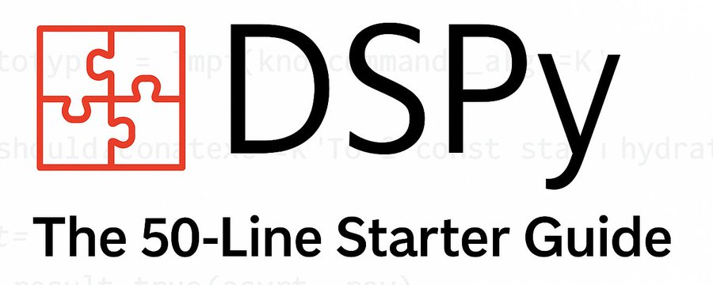
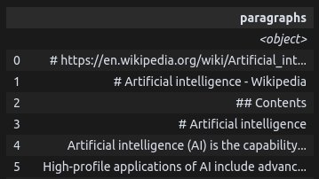
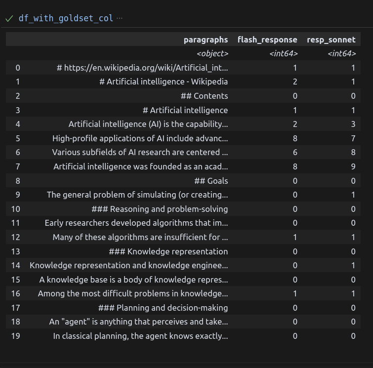
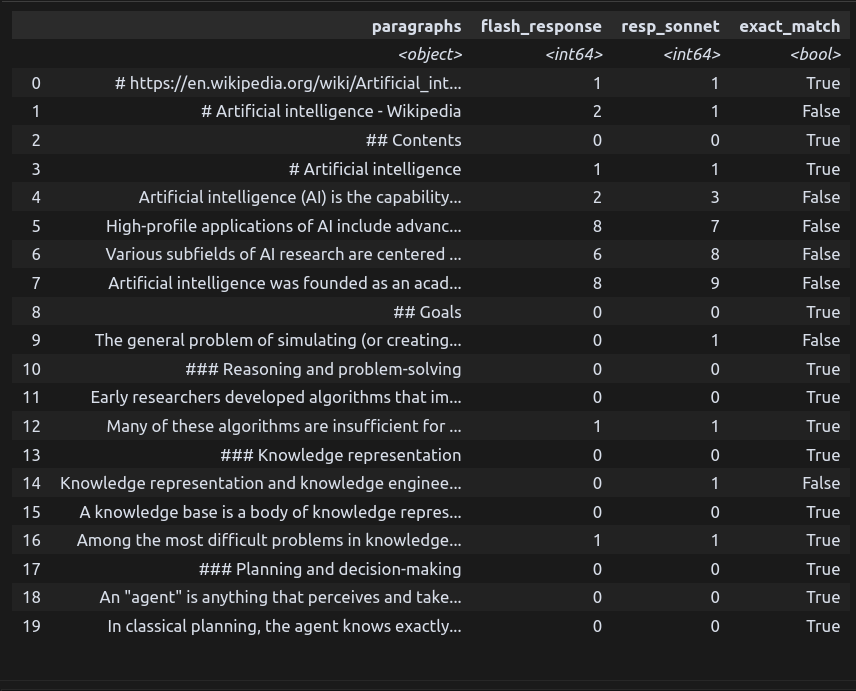
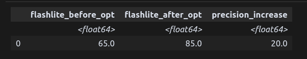

import dspyA Simple Introduction to DSPy
2025-06-03

DSPy is simple and powerful. It is the best way to build LLM software right now. Despite that, lots of people keep putting off learning it. I know I did—for a whole year! I was excited about DSPy, but I thought I would need a substantial time investment before I could “get it.” That’s not the case! It took me one hour. If you know Python, in an hour you’ll either have built several LLM programs, or you’ll have built one, benchmarked it, and optimized it!
In this article, we’ll go through the entire cycle: building a program, creating a gold set (synthetically, with AI—and yes, it’s actually useful, not just contrived!), and evaluating the results.
For this article, our task will be to build a program that can count the mentions of “Artificial Intelligence,” “AI,” or any other ways of referring to AI.
Overview
We’ll:
- Define a DSPy signature for counting AI mentions
- Fetch data from Wikipedia
- Create a training dataset using a stronger model (Claude Sonnet 4)
- Optimize a weaker model (Gemini Flash-lite 2.0) to match the stronger model’s performance
Step 1: Define the AI Task Signature
In DSPy, we define the task using a Signature class instead of writing prompts manually. DSPy provides two ways for you to specify your program. This is the shortest method. In this case, it has four parts:
- dspy.Predict: This could have been
dspy.ChainOfThought; it lets you specify the “strategy” the LLM should use. Predict is the vanilla option—no special strategy is mentioned in the prompt that DSPy sends to the LLM. - Input (“paragraph”): This tells the LLM that it will receive a “paragraph” as input.
- Output (“ai_occurrences_count”): This tells the LLM that it will have to output the “AI occurrences count.”
- Output Type (“float”): This specifies that the output should be a float—nothing else.
ai_counter = dspy.Predict("paragraph -> ai_occurrences_count: float")You can specify more. To fully define your program, you would use the class syntax (see the chunk below). In this case, you can add general instructions and descriptions to the fields (inputs and/or outputs).
import dspy
# Setup the llm
dspy.configure(lm=dspy.LM('gemini/gemini-2.0-flash-lite', temperature = 1.0, max_tokens = 6000))
# This define the signature of the AI function. The replaces prompts.
class count_ai_occurrences(dspy.Signature):
"""Count the number times the word 'Artificial Intelligence'
or 'AI' or any other reference to AI or AI-related terms appears in the paragraph"""
paragraph: str= dspy.InputField(desc = "The paragraph to count the AI mentions in")
ai_occurrences_count: int= dspy.OutputField(desc = "The number of times the word 'Artificial Intelligence' or 'AI' appears in the paragraph")
dspy_module = dspy.Predict(count_ai_occurrences)This signature will be turned into the following prompt by DSPy:
[
{
"role": "system",
"content": """Your input fields are:
1. `paragraph` (str): The paragraph to count the AI mentions in
Your output fields are:
1. `ai_occurrences_count` (int): Number of times 'Artificial Intelligence'
or 'AI' appears in the paragraph
Format all interactions like this, filling in the values:
[[ ## paragraph ## ]]
{paragraph}
[[ ## ai_occurrences_count ## ]]
{ai_occurrences_count} # must be a single int value
[[ ## completed ## ]]
Objective:
Count the number times the word 'Artificial Intelligence'
or 'AI' or any other reference to AI or AI-related terms appears in the paragraph."""
},
{
"role": "user",
"content": """[[ ## paragraph ## ]]
This is a paragraph mentioning AI once.
Respond with the corresponding output fields, starting with
[[ ## ai_occurrences_count ## ]] (must be a valid Python int),
then end with [[ ## completed ## ]].
"""
}
]Ok, so our program is defined! That’s it.
There’s one small thing I like to do—it’s entirely optional. I do it because I want to use my DSPy program more like a regular function. So, before I go ahead, I wrap it in a function:
def count_ai_occurrences_f(paragraph):
return dspy_module(paragraph=paragraph).ai_occurrences_countThe DSPy module requires keyword arguments and returns output as an object. Instead of repeatedly specifying my keyword arguments and the single output I want, I bake that in here. This also has the added benefit that my function now composes well with my data analytics tools, which expect not to provide a keyword argument or extract a value from an output object.
Step 2: Fetch Data
This section has nothing to do with LLMs. We are simply fetching content from the Wikipedia AI page and storing it in a dataframe. We use the Attachments library to easily fetch and split paragraphs from Wikipedia.
from attachments import Attachments
attachments_dsl = "[images: false][select: p,title,h1,h2,h3,h4,h5,h6][split: paragraphs]"
a = Attachments("https://en.wikipedia.org/wiki/Artificial_intelligence" + attachments_dsl)We then use Datar as our data manipulation tool. I come from R and I love dplyr. Datar is an effort to provide a similar data manipulation experience here in Python.
from datar import f
import datar.base as b
from datar.tibble import tibble
from datar.dplyr import mutate, summarise, n
df = tibble(paragraphs = [p.text for p in a[:10]])
Dataframe Structure
The resulting tibble dataframe contains only one column (paragraphs) with the text from Wikipedia.

Step 3: Applying the AI to our paragraphs
Now we are starting to use large language models. Below, we apply our function to every row in our dataframe. In other words, we loop through each paragraph and send it to the LLM. The LLM returns the number of times it thinks “AI” was mentioned in the paragraph. The result from the LLM is extracted as a float. We store this in a new column of our dataframe, which we name flash_response.
df = mutate(df, flash_response = f.paragraphs.apply(count_ai_occurrences_f))This column is now our baseline. This shows how Flash-lite performs with the base prompt from DSPy. Now, we want to optimize that prompt! For this, we need a gold set.
I like to create gold sets with state-of-the-art (SOTA) models and then optimize the prompt to approximate the responses I would get from a SOTA model, but using a much smaller, faster, and cheaper model. In other words, we’ll provide a sample of our paragraphs to Sonnet 4 and then automatically “find a way” to prompt Flash-lite into responding like Sonnet would. This is extremely useful when you don’t know the answer yourself but know that SOTA models do—or at least they get it “right enough” for you to gain valuable insights.
Ok, so now we want to add a column with Sonnet’s answers.
with dspy.context(lm=dspy.LM('anthropic/claude-sonnet-4-20250514')):
df_with_goldset_col = mutate(df, resp_sonnet = f.paragraphs.apply(count_ai_occurrences_f))That’s it. Let’s break down those two lines. First, DSPy recommends using either dspy.context or dspy.configure to set the LLM. Both ways are fine and both are thread-safe. On the second line, we take our current dataframe, which now has two columns (paragraphs and flash_response), and loop through every value in paragraphs, passing each one to our AI program. We then save all of that in a new column called resp_sonnet, and the entire dataframe is stored as df_with_goldset_col.
Gold Set Strategy
Using a SOTA model to create gold sets is a practical approach when you don’t have manually labeled data but trust that advanced models will perform well enough for your use case.

Evaluation
Next, we need a metric! In this case, we’ll keep it simple—we’ll require an exact match. Let’s add a column for exact_match (true/false).
df_with_goldset_col = mutate(df_with_goldset_col, exact_match = f.resp_sonnet == f.flash_response)
Let’s quickly calculate our current precision. Here, we are purely in dataframe manipulation mode with Datar. Using the >> operator, we can pass the dataframe you see above (as it comes out of mutate) to the summarise function, which sums all the True values (1s) and divides by the number of rows.
baseline_metrics = (mutate(df_with_goldset_col, exact_match = f.resp_sonnet == f.flash_response) >>
summarise(baseline_precision = b.sum(f.exact_match)/n() * 100))This tells us that we have 65% baseline precision with Flash-lite and this prompt.
Preparing for the optimizer
So now we have all the conceptual pieces needed to run the optimizer.
optimizer = dspy.MIPROv2(metric=exact_match)
optimized_dspy_module = optimizer.compile(dspy_module, trainset=trainset)But notice how I said “conceptual”—now we need to do a bit of data wrangling to get our dataframe into an object that compile knows how to work with. The same goes for the metric.
Here’s how to reshape the data:
trainset = []
for r in df_with_goldset_col.to_dict(orient='records'):
trainset.append(dspy.Example(
paragraph=r['paragraphs'], # this is the input
ai_occurrences_count=r["resp_sonnet"]). # this is the target
with_inputs('paragraph')) # this is needed (not sure why)This is how to prepare the metric: it has to use .[output_name] to access the value of x (gold set) and y (trained model output).
def exact_match(x, y, trace=None):
return x.ai_occurrences_count == y.ai_occurrences_countWith these two chunks of code, the optimizer will run! In this case, if we were to keep it as is, we would be using Flash-lite to compose the prompts (whenever the optimizer we choose does that). I prefer to use a SOTA model for that, so we will set a teacher model. To set a teacher model on MIPROv2, use the teacher_settings keyword. Be careful—different optimizers set the teacher in different ways.
Automatic prompt optimization
optimizer = dspy.MIPROv2(metric=exact_match,
teacher_settings=dspy.LM('anthropic/claude-sonnet-4-20250514'))
optimized_dspy_module = optimizer.compile(dspy_module, trainset=trainset)We’ll wrap it in a function again so we can use it with our data analytics tools.
def count_ai_occurrences_opt(paragraph):
return optimized_dspy_module(paragraph=paragraph).ai_occurrences_countAnd we’ve built a complete one-shot pipeline to apply the optimized program, add it as a new column, and summarize the dataframe into performance metrics. Apart from count_ai_occurrences_opt, this has nothing to do with DSPy.
final_performance = (df_with_goldset_col >>
mutate(
# Applies flash to every row with the optimized prompt
resp_flash_opt= f.paragraphs.apply(count_ai_occurrences_opt)) >>
mutate(
# Add 2 columns with 0 or 1 if the flash response is equal to the sonnet response
flash_eq_sonnet = f.resp_sonnet == f.flash_response, # Compare flash with sonnet
flash_opt_eq_sonnet = f.resp_flash_opt == f.resp_sonnet # Compare opt flash with sonnet
) >>
summarise(
# Sum the number of rows where the flash response is equal to the sonnet response
flashlight_before_opt = b.sum(f.flash_eq_sonnet)/n() * 100, #n() is the number of rows in df
# Sum the number of rows where the opt flash response is equal to the sonnet response
flashlight_after_opt = b.sum(f.flash_opt_eq_sonnet)/n() * 100 #n() is the number of rows in df
) >>
mutate(precision_increase=f.flashlight_after_opt-f.flashlight_before_opt)
)
Results
Performance Improvement
Flash-lite improved by 20%. Not bad!
Here is the optimized prompt:
[
{
"role": "system",
"content": """Your input fields are:
1. `paragraph` (str): The paragraph to count the AI mentions in
Your output fields are:
1. `ai_occurrences_count` (int): The number of times the word 'Artificial Intelligence'
or 'AI' appears in the paragraph
All interactions will be structured in the following way, with the appropriate values filled in:
[[ ## paragraph ## ]]
{paragraph}
[[ ## ai_occurrences_count ## ]]
{ai_occurrences_count} # note: the value you produce must be a single int value
[[ ## completed ## ]]
Objective:
Analyze the provided paragraph and determine the frequency of mentions related to
"Artificial Intelligence" (AI). This includes direct references to "AI",
"Artificial Intelligence", as well as any related concepts, technologies, or subfields
associated with AI. Provide a count representing the total number of AI-related mentions.
"""
},
{
"role": "user",
"content": """[[ ## paragraph ## ]]
In classical planning, the agent knows exactly what the effect of any action
will be.[35] In most real-world problems, however, the agent may not be certain
about the situation they are in (it is "unknown" or "unobservable") and it may
not know for certain what will happen after each possible action (it is not
"deterministic"). It must choose an action by making a probabilistic guess and
then reassess the situation to see if the action worked.[36]
Respond with the corresponding output fields, starting with the field
[[ ## ai_occurrences_count ## ]] (must be formatted as a valid Python int), and
then ending with the marker for [[ ## completed ## ]].
"""
}
]Conclusion
In about 50 lines, we: - Fetched paragraphs from Wikipedia - Created a gold-set - Tuned Flash-lite - Improved its precision by 20%
No prompt spaghetti.
The Complete Script
import dspy
from attachments import Attachments
from datar import f
import datar.base as b
from datar.tibble import tibble
from datar.dplyr import mutate, summarise, n
# Setup the LLM
dspy.configure(lm=dspy.LM('gemini/gemini-2.0-flash-lite', temperature=1.0, max_tokens=6000))
# Define the signature
class count_ai_occurrences(dspy.Signature):
"""Count the number times the word 'Artificial Intelligence'
or 'AI' or any other reference to AI or AI-related terms appears in the paragraph"""
paragraph: str = dspy.InputField(desc="The paragraph to count the AI mentions in")
ai_occurrences_count: int = dspy.OutputField(desc="The number of times the word 'Artificial Intelligence' or 'AI' appears in the paragraph")
# Create the DSPy module
dspy_module = dspy.Predict(count_ai_occurrences)
# Wrap in a function
def count_ai_occurrences_f(paragraph):
return dspy_module(paragraph=paragraph).ai_occurrences_count
# Fetch data
attachments_dsl = "[images: false][select: p,title,h1,h2,h3,h4,h5,h6][split: paragraphs]"
a = Attachments("https://en.wikipedia.org/wiki/Artificial_intelligence" + attachments_dsl)
# Create dataframe
df = tibble(paragraphs=[p.text for p in a[:10]])
# Apply baseline model
df = mutate(df, flash_response=f.paragraphs.apply(count_ai_occurrences_f))
# Create gold set with Sonnet
with dspy.context(lm=dspy.LM('anthropic/claude-sonnet-4-20250514')):
df_with_goldset_col = mutate(df, resp_sonnet=f.paragraphs.apply(count_ai_occurrences_f))
# Calculate baseline precision
baseline_metrics = (mutate(df_with_goldset_col, exact_match=f.resp_sonnet == f.flash_response) >>
summarise(baseline_precision=b.sum(f.exact_match)/n() * 100))
# Prepare training set
trainset = []
for r in df_with_goldset_col.to_dict(orient='records'):
trainset.append(dspy.Example(
paragraph=r['paragraphs'],
ai_occurrences_count=r["resp_sonnet"]).with_inputs('paragraph'))
# Define metric
def exact_match(x, y, trace=None):
return x.ai_occurrences_count == y.ai_occurrences_count
# Optimize
optimizer = dspy.MIPROv2(metric=exact_match,
teacher_settings=dspy.LM('anthropic/claude-sonnet-4-20250514'))
optimized_dspy_module = optimizer.compile(dspy_module, trainset=trainset)
# Wrap optimized module
def count_ai_occurrences_opt(paragraph):
return optimized_dspy_module(paragraph=paragraph).ai_occurrences_count
# Calculate final performance
final_performance = (df_with_goldset_col >>
mutate(resp_flash_opt=f.paragraphs.apply(count_ai_occurrences_opt)) >>
mutate(
flash_eq_sonnet=f.resp_sonnet == f.flash_response,
flash_opt_eq_sonnet=f.resp_flash_opt == f.resp_sonnet
) >>
summarise(
flashlight_before_opt=b.sum(f.flash_eq_sonnet)/n() * 100,
flashlight_after_opt=b.sum(f.flash_opt_eq_sonnet)/n() * 100
) >>
mutate(precision_increase=f.flashlight_after_opt-f.flashlight_before_opt)
)